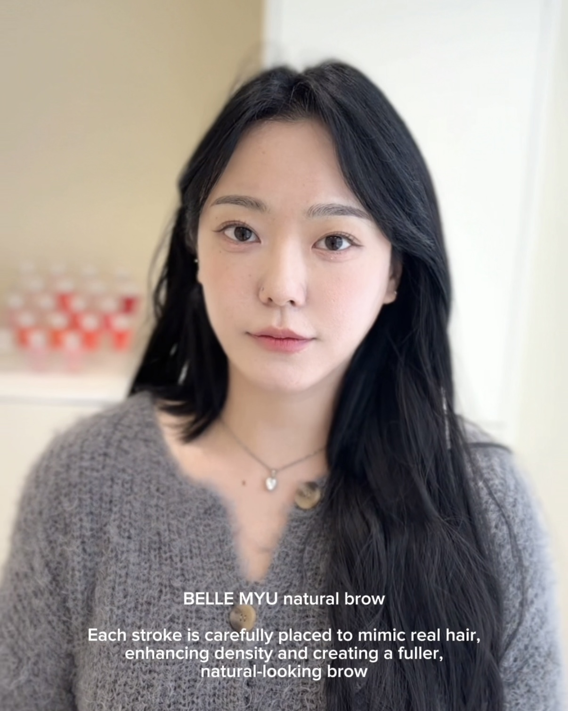

여성 눈썹
얼굴형과 눈매, 평소 메이크업 분위기에 맞춰 자연스러운 균형을 찾습니다.
진행 과정 보기 →BELLE MYU CHEONGJU · BROW DESIGN
정면에서만 반듯한 눈썹이 아니라
말하고 웃을 때도 내 얼굴에 자연스럽게 어울리는 눈썹.
벨르뮤 청주본점은 상담에서 디자인을 시작합니다.

다만 같은 얼굴이라도 눈썹의 높이와 굵기, 각도의 작은 차이만으로 전체 인상은 달라질 수 있습니다.
벨르뮤는 정면에서 반듯해 보이는 모양만 디자인하지 않습니다. 편하게 이야기할 때의 표정, 눈을 뜨거나 웃을 때 달라지는 움직임, 기존 눈썹의 모량과 결, 평소 그리는 방법과 원하는 인상까지 함께 확인합니다.
공장에서 찍어낸 듯한 눈썹이 아니라 고객님의 얼굴에 원래 있었던 것처럼 자연스럽고, 평소 표정에도 어색하지 않은 디자인을 제안합니다.

상담부터 디자인, 진행 방향 안내까지 한 사람의 얼굴을 충분히 살펴 결정합니다.
눈썹문신을 대표 프로그램으로, 현재 눈썹의 상태와 원하는 인상에 맞는 방향을 상담합니다.
얼굴형과 눈매, 평소 메이크업 분위기에 맞춰 자연스러운 균형을 찾습니다.
진행 과정 보기 →과하게 다듬은 느낌보다 기존 결의 방향과 골격에 맞춰 또렷함을 조율합니다.
상담 기준 보기 →기존 눈썹의 결을 살리면서 필요한 부분에 자연스러운 흐름을 더합니다.
사례 보기 →결 표현과 부드러운 음영을 함께 적용해 모량과 선명도의 균형을 맞춥니다.
사례 보기 →기존 색과 피부 상태를 확인한 뒤 바로 진행하지 않고 가능한 방향부터 설명합니다.
상담 문의 →눈썹 외 프로그램은 상담을 통해 진행 가능 여부와 방향을 안내합니다.
사진 한 장의 인상보다 실제 얼굴에서 어울리는 흐름을 중요하게 봅니다.


포트폴리오 이미지는 개인의 눈썹 상태와 피부 컨디션에 따라 결과가 달라질 수 있습니다.
눈썹은 관리 직후의 사진만 보고 판단하기 어렵습니다. 처음에는 색이 진해 보일 수 있고, 탈각을 거치며 굵기와 색감, 밀도가 달라질 수 있기 때문입니다.
상담 → 얼굴과 기존 눈썹 확인 → 디자인 조율 → 진행 방향 안내 → 사후 관리 설명
피부 상태에 따라 변화가 다를 수 있어 시술 전후 주의사항을 함께 안내합니다.
피부 타입과 생활 습관, 자외선 노출, 홈케어에 따라 개인차가 있습니다.
현재 피부 상태와 기존 잔흔을 확인한 뒤 필요한 관리 내용을 설명합니다.
처음이라 진해질까 걱정되는 경우, 비대칭이나 잔흔이 남은 경우도 상담 후 결정할 수 있습니다.
가경동눈썹문신, 강서동눈썹문신, 청주터미널눈썹문신, 흥덕구 눈썹문신을 찾고 있다면 방문 전 상담으로 현재 상태와 원하는 방향을 먼저 확인해보세요.
BELLE MYU CHEONGJU